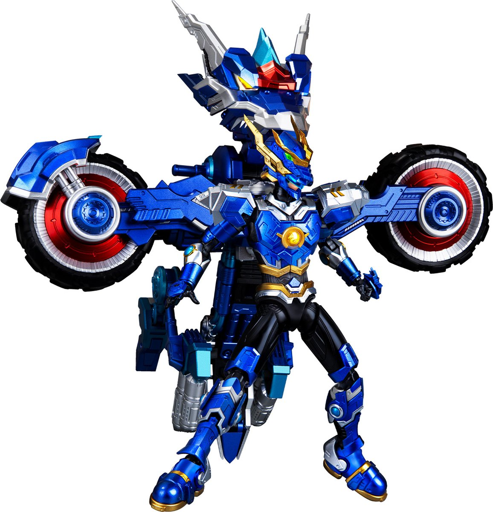

桃子互联网医院-Wiggin
@Longlinlon
理想男友

HOBBY SHOP でじたみん
@digitamin
◎中国のSFアニメ『ULTRA BEAST FORCE(ウルトラ・ビースト・フォース)』に登場する特撮感あふれるキャラと
彼の乗り物「ドラゴンバイク」がプラモデルで登場！
バイクは多形態変換ギミックを搭載！
◆Yilichuangwan ULTRA BEAST FORCE 龍セン(りゅうせん) (Devin)×ドラゴンバイク 1/12スケール https://t.co/oJfD83pXgv